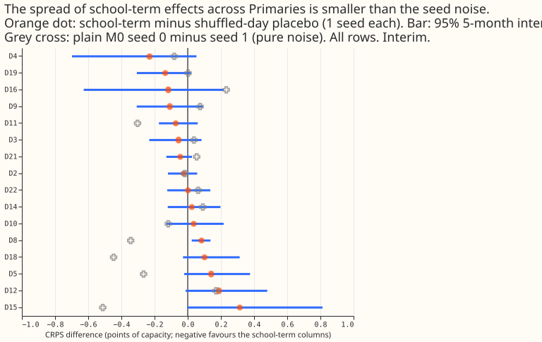
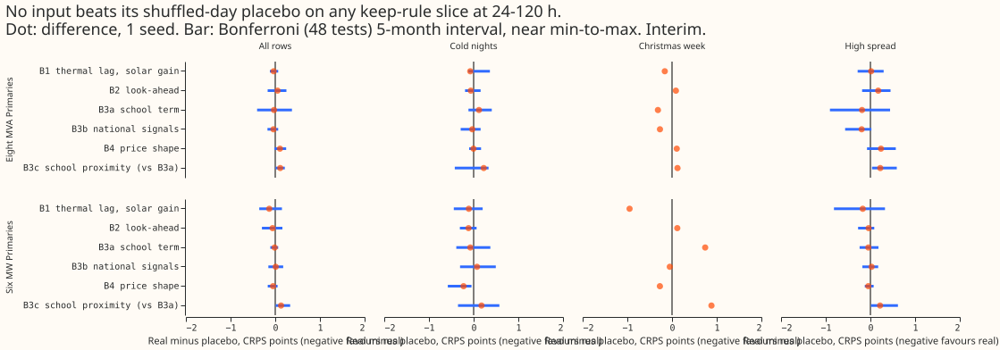

Does each input group help the modular network when it also enters pre-training, through the encoder that matches it?
Status: finished. Every number is interim and unaudited.
Take-home message. We gave a neural network that forecasts demand at 16 primary substations
("Primaries") six groups of extra inputs: thermal-lag and solar-gain windows (B1), look-ahead
weather windows (B2), school terms (B3a), national signals of the previous day (B3b), a whole-day
price shape (B4), and school terms gated by the number of schools nearby (B3c). Experiment 562 added
the first five only during fine-tuning on ensemble weather forecasts; here they also enter
pre-training on ERA5 (the ECMWF reanalysis) and CAMS (Copernicus Atmosphere Monitoring Service)
rows. Each group entered through the part
of the network that matches its content. We compared each group with a shuffled-day placebo:
columns of the same width taken from a different day. Errors are CRPS (continuous ranked probability
score) in points of effective capacity (percentage points of a substation's rated capacity); smaller
is better. No group beat its placebo by the minimum detectable effect (the smallest gain this test
could tell from noise) on any of the four slices that can justify keeping an input (all rows, cold
winter nights, Christmas week, and high-spread days), three contrasts were worse, and every arm
scored worse than the baseline network (plain M0), so the verdict is not supported. The next
step is a second seed (a second random initialisation) for every arm and a plain M0 re-pre-trained
the same way. A name ending in p (B1p) is the placebo of the arm without it.
What was done
- Network and folds. The modular lag-free network of experiment 554 (arm M0), refitted once per fold (coarse refit, scored for the whole month) on experiment 511's five folds, July 2026 unused, seed 0. Plain M0 (stored pre-trained weights, seeds 0 and 1) is the control. The code reuses experiments 437, 448, 511, 515, 554, and 562.
- Routes. B1 (thermal lag, solar gain, 14 columns) and B2 (look-ahead windows, 6) enter the weather encoder. B3a (school terms, 5 columns plus a presence flag) and B3c (B3a plus 5 columns gated by the count of schools within 2 km) enter the datetime encoder. B3b (national signals of the previous day, 7 plus a flag) and B4 (whole-day price shape, 12) enter a small parallel encoder that feeds both mixers.
- Pre-training history. School terms exist from 2021-09, national signals from 2023-01, and the price shape from 2023, while pre-training starts in 2019-09. Earlier pre-training rows get zeros and a presence flag of 0.
- School proximity. The count of open schools within 2 km comes from the Department for Education's "Get Information about Schools" register (source, Open Government Licence v3.0, downloaded 2026-11-05 into the private data folder).
- Weather timing. Fine-tuning and scoring rows assert, row by row, that the weather run is issued at or before the forecast origin. One example row per fold is in the logs: origin 2025-10-01 09:00, weather run 2025-10-01 00:00. Pre-training rows use the same ERA5 and CAMS stand-ins as the 37 base inputs.
- Statistics. Month-block bootstrap with one block per fold (5 blocks on all rows, 3 on cold nights, 1 on Christmas week), so each interval is close to the range of the fold means, per-fold signs, the minimum detectable effect (MDE) from the fold-by-seed spread of plain M0 seeds 0 and 1, 48 counted contrasts (6 contrasts x 2 groups x 4 keep-rule slices) for the Bonferroni interval, and 120 uncorrected "hurt" checks (6 x 2 x 10 slices). Heatwave and high-PV-ramp days were not scored.
Step 1: school terms in experiment 562

- The spread of the school-term effect across Primaries is smaller than seed noise. Real minus placebo ranges from -0.230 to +0.314 points (standard deviation 0.137 over 16 Primaries); plain M0 seed 0 minus seed 1 on the same rows has standard deviation 0.224. Only D8 has a 5-block interval that excludes zero, on the harmful side.
- School proximity does not explain the spread. Spearman correlation of the effect with open schools within 2 km is +0.28 (bootstrap over Primaries -0.30 to +0.72), within 5 km -0.09. The pre-registered expectation (at most -0.3, interval excluding zero) fails. D15 and D18 share one location.
Results

- No group improves any keep-rule slice by its MDE. Real minus placebo on all rows, 24-120 h, eight MVA Primaries and six MW Primaries: B1 -0.036 and -0.135; B2 +0.052 and -0.059; B3a -0.028 and -0.013; B3b -0.040 and +0.010; B4 +0.106 and -0.049. The MDE on all rows is 0.103 and 0.299. On cold nights the largest gain is B4 at the six MW Primaries, -0.225 (interval -0.58 to -0.05), against an MDE of 0.72.
- Three contrasts are worse. B4 at the eight MVA Primaries on all rows (+0.106, worse in 4 of 5 folds, MDE 0.103), B3c minus B3a at the eight on all rows (+0.112, 4 of 5 folds) and on rows with no labelled event (+0.100). B3c minus B3a at the six is +0.131 (Bonferroni interval +0.01 to +0.33).
- Every extra-input arm is worse than the two-seed mean of plain M0. On all rows, 24-120 h, that mean scores 4.841 at the eight MVA Primaries and 3.639 at the six MW Primaries; M0 seed 0 alone scores 4.902 and 3.668, and seed 1 alone 4.917 and 3.724. The arms score 4.87 to 5.10 at the eight and 3.68 to 3.93 at the six, so against a single M0 seed a few arms are level or slightly better (B3b at the eight, 4.871). The gap between each arm and M0 includes a different random initialisation, because widening a layer changes the random draws.
- Injected-shift leak (interim). The leak is the change in the median forecast, as a percentage of capacity, when a 7-day shift is injected into the fine-tuning history (all lead times, mean of 5 folds; fold range in brackets): M0 9.8 [1.9, 25.6], B1 5.3 [1.0, 13.6], B1 placebo 10.9 [2.2, 28.4], B3a 2.2 [1.1, 3.8], B3a placebo 8.4 [1.5, 21.6]. The real columns carry less of the injected shift than their placebos in this single seed; the fold ranges overlap, and the leak does not enter the keep rule.
Predictions. P1 failed (B1 cold nights at the six: -0.107 against an MDE of 0.72). P2 failed (B3a -0.028 at the eight, interval includes zero). P3 failed for all three by its point-estimate wording: B2 (+0.052 at the eight, -0.059 at the six), B3b (-0.040 at the eight), and B4 (+0.106 at the eight, harmful); the intervals of B2 and B3b include zero and their size is below the MDE. P4 failed (B3c worse than B3a by 0.112), as the step-1 correlation suggested.
Checks
- Single seed. The MDE comes from two M0 seeds, and the arms have one. A gain smaller than 0.10 points (eight) or 0.30 (six) on all rows could not have been seen.
- Placebo limits. Pre-training placebos take a donor day from the pre-refit side; a placebo row keeps the real row's presence flag, so a donor from before 2021-09 or 2023 can give zeros where the real row has values. Cut-day-14 placebo fits use donor days drawn for the month's start, not day 14.
- High-spread slice. The stored scores hold no ensemble-spread column, so the slice is the top tercile of M0's own q95 minus q05 within Primary, fold, and lead band.
- Not scored. Heatwave and high-PV-ramp days, per-Primary tables, example forecast plots, and the leak for arms other than M0, B1, B1p, B3a, and B3ap. NGED's event logs may be incomplete, so rows with no labelled event can hold unlabelled events.
- Availability at serving. B1 and B2 need ECMWF runs and, for two B1 columns, the CAMS feed. B3a is a fixed calendar. B3b needs daily Elexon and NESO feeds that production does not read today.
What the next experiment should answer
Does a plain M0 re-pre-trained with the same code, and a second seed for every arm, shrink the gap to the arms, and does B1 still lower cold-night error at the six MW Primaries once the control is matched?